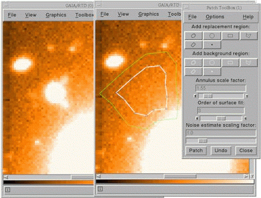

Image Patching
Image patching provides the ability to select arbitrary shaped regions on an image and replace them with a surface fit to other arbitrary shaped regions, together with an artificial noise component. This is an ideal way to remove unwanted defects from an image for cosmetic reasons. Using it for other purpose should be done very carefully.
Note: a patched image is only retained in memory, the associated disk file is not updated. One consequence of this is that toolboxes that use external programs (like photometry and object detection) will not see the changes until after you save (and re-display) the image. The changes to the image could also be lost when exiting GAIA.
The toolbox has some usage hints:
